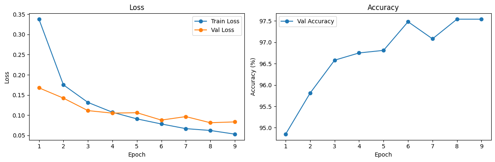
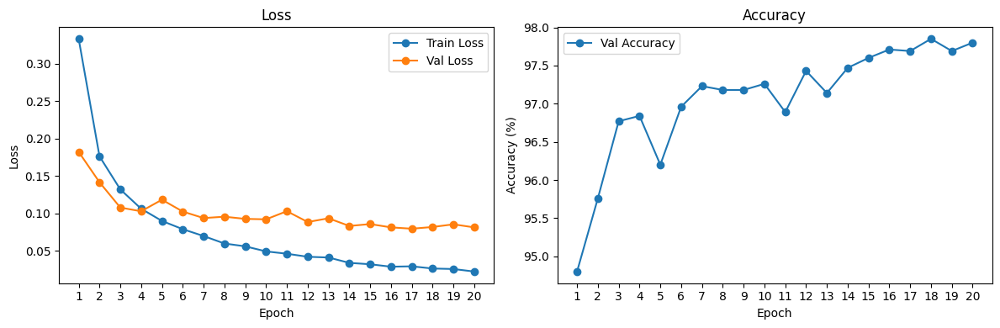
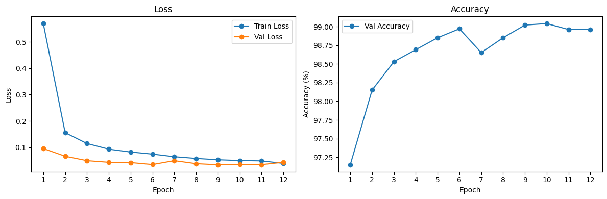

4. Image Recognition#
4.1. Train, Test, and Validation Splits#
When working with neural networks, it is common practice to divide the dataset into three splits:
The train split (80% of the dataset) is used to optimize the model parameters during training.
The validation split (10% of the dataset) is used to help us adjust the hyperparameters of the model.
The test split (10% of the dataset) is used to evaluate the final model’s performance.
Metric |
Typical Use |
Notes |
|---|---|---|
Train Loss |
Monitor how well the model is learning |
Should decrease over epochs. If it doesn’t, possible issues include a too low/high learning rate, underfitting (model too simple), or noisy data. |
Val Loss |
Monitor how well the model generalizes |
Should also decrease. If Train Loss ↓ but Val Loss ↑, it indicates overfitting (model too complex or too much training). Commonly used in early stopping. |
Val Accuracy |
Measures model performance on unseen data |
Often more interpretable than loss, especially for classification tasks. |
Test Loss/Accuracy |
Report final model performance |
Use only after the model is fully optimized. Using the test split to help us adjust the hyperparameters of the model would result in overfitting. |
# Load the dataset
train_ds = MNIST(root="../data", train=True, download=True, transform=ToTensor())
test_ds = MNIST(root="../data", train=False, download=True, transform=ToTensor())
# Split full training set into train and validation
g = torch.Generator().manual_seed(1)
train_ds, val_ds = random_split(train_ds, [50000, 10000], generator=g)
# DataLoaders
batch_size = 32
train_loader = DataLoader(train_ds, batch_size=batch_size, shuffle=True, generator=g)
val_loader = DataLoader(val_ds, batch_size=batch_size)
test_loader = DataLoader(test_ds, batch_size=batch_size)
def print_log(log):
"""
Print formatted training log table.
Parameters:
log (str): Formatted log string with one line per epoch.
"""
print(f"| {'Epoch':^5} | {'Train Loss':^10} | {'Val Loss':^8} | {'Val Accuracy':^12} |")
print(f"|{'-'*7}|{'-'*12}|{'-'*10}|{'-'*14}|")
print(log)
def plot_metrics(metrics):
"""
Plot training and validation loss, and validation accuracy over epochs.
Parameters:
metrics (list): List of tuples of the form (train_loss, val_loss, val_accuracy).
"""
train_losses, val_losses, val_accuracies = zip(*metrics)
epochs_range = range(1, len(metrics) + 1)
plt.figure(figsize=(12, 4))
# Plot Loss
plt.subplot(1, 2, 1)
plt.plot(epochs_range, train_losses, label="Train Loss", marker='o')
plt.plot(epochs_range, val_losses, label="Val Loss", marker='o')
plt.xlabel("Epoch")
plt.ylabel("Loss")
plt.xticks(epochs_range)
plt.legend()
plt.title("Loss")
# Plot Accuracy
plt.subplot(1, 2, 2)
plt.plot(epochs_range, [acc * 100 for acc in val_accuracies], label="Val Accuracy", marker='o')
plt.xlabel("Epoch")
plt.ylabel("Accuracy (%)")
plt.xticks(epochs_range)
plt.legend()
plt.title("Accuracy")
plt.tight_layout()
plt.show()
# Hyperparameters
epochs = 9 # Number of times the dataset is fully seen
batch_size = 32 # Number of examples per batch
lr = 0.1 # Learning rate
# Initialize model
model = MLP()
optimizer = torch.optim.SGD(model.parameters(), lr=lr)
log = ""
metrics = []
# Train model
for epoch in range(epochs):
model.train()
running_train_loss = 0
for Xb, Yb in train_loader:
logits = model(Xb)
loss = F.cross_entropy(logits, Yb)
running_train_loss += loss.item()
optimizer.zero_grad()
loss.backward()
optimizer.step()
train_loss = running_train_loss / len(train_loader)
val_loss, val_accuracy = evaluate(model, val_loader)
metrics.append((train_loss, val_loss, val_accuracy))
log += f"| {epoch+1:^5} | {train_loss:^10.4f} | {val_loss:^8.4f} | {f'{val_accuracy*100:.2f}%':^12} |\n"
# Evaluate model
test_loss, test_accuracy = evaluate(model, test_loader)
log += f"\nTest Loss: {test_loss:.4f} Test Accuracy: {test_accuracy*100:.2f}%"
print_log(log)
| Epoch | Train Loss | Val Loss | Val Accuracy |
|-------|------------|----------|--------------|
| 1 | 0.3377 | 0.1677 | 94.85% |
| 2 | 0.1750 | 0.1422 | 95.81% |
| 3 | 0.1316 | 0.1113 | 96.58% |
| 4 | 0.1073 | 0.1051 | 96.75% |
| 5 | 0.0908 | 0.1061 | 96.81% |
| 6 | 0.0782 | 0.0878 | 97.48% |
| 7 | 0.0667 | 0.0965 | 97.08% |
| 8 | 0.0621 | 0.0813 | 97.54% |
| 9 | 0.0531 | 0.0834 | 97.54% |
Test Loss: 0.0835 Test Accuracy: 97.50%
plot_metrics(metrics)

4.2. Underfitting and Overfitting#
Underfitting happens when a model is too simple or not trained enough to capture the underlying patterns in the data. It performs poorly both on training data and on validation/test data.
Overfitting happens when a model learns the training data too well, including the noise or random fluctuations, instead of general patterns. It performs great on training data but poorly on new unseen data (validation/test data).
This typically occurs when:
The model is too complex: For example, too many layers or too many parameters.
Training for too long: If you train a complex model for too many epochs, it starts fitting not just the true signal but also noise in the training set.
4.3. Early Stopping#
class EarlyStopping:
def __init__(self, patience=3):
self.patience = patience
self.best_val_loss = float('inf')
self.epochs_no_improve = 0
self.best_model_state = None
self.stop = False
def __call__(self, val_loss, epoch, model, log):
if val_loss < self.best_val_loss:
self.best_val_loss = val_loss
self.epochs_no_improve = 0
self.best_model_state = model.state_dict()
else:
self.epochs_no_improve += 1
if self.epochs_no_improve >= self.patience:
self.stop = True
log += f"\nEarly stopping triggered at epoch {epoch+1}\n"
log += f"Best epoch was {epoch+1 - self.patience}, loaded those weights\n"
return log
# Hyperparameters
max_epochs = 100
patience = 3
batch_size = 32 # Number of examples per batch
lr = 0.1 # Learning rate
# Intialize model
model = MLP()
optimizer = torch.optim.SGD(model.parameters(), lr=lr)
early_stopper = EarlyStopping(patience=patience)
log = ""
metrics = []
# Train model
for epoch in range(max_epochs):
model.train()
running_train_loss = 0
for Xb, Yb in train_loader:
logits = model(Xb)
loss = F.cross_entropy(logits, Yb)
running_train_loss += loss.item()
optimizer.zero_grad()
loss.backward()
optimizer.step()
train_loss = running_train_loss / len(train_loader)
val_loss, val_accuracy = evaluate(model, val_loader)
metrics.append((train_loss, val_loss, val_accuracy))
log += f"| {epoch+1:^5} | {train_loss:^10.4f} | {val_loss:^8.4f} | {f'{val_accuracy*100:.2f}%':^12} |\n"
# Early stopping
log = early_stopper(val_loss, epoch, model, log)
if early_stopper.stop:
break
# Load best model weights before testing
model.load_state_dict(early_stopper.best_model_state)
# Evaluate model
test_loss, test_accuracy = evaluate(model, test_loader)
log += f"\nTest Loss: {test_loss:.4f} Test Accuracy: {test_accuracy*100:.2f}%"
print_log(log)
| Epoch | Train Loss | Val Loss | Val Accuracy |
|-------|------------|----------|--------------|
| 1 | 0.3333 | 0.1822 | 94.80% |
| 2 | 0.1762 | 0.1416 | 95.76% |
| 3 | 0.1320 | 0.1078 | 96.77% |
| 4 | 0.1062 | 0.1028 | 96.84% |
| 5 | 0.0899 | 0.1183 | 96.20% |
| 6 | 0.0789 | 0.1024 | 96.96% |
| 7 | 0.0697 | 0.0937 | 97.23% |
| 8 | 0.0597 | 0.0956 | 97.18% |
| 9 | 0.0559 | 0.0927 | 97.18% |
| 10 | 0.0492 | 0.0921 | 97.26% |
| 11 | 0.0460 | 0.1029 | 96.89% |
| 12 | 0.0420 | 0.0885 | 97.43% |
| 13 | 0.0410 | 0.0934 | 97.14% |
| 14 | 0.0338 | 0.0832 | 97.47% |
| 15 | 0.0320 | 0.0857 | 97.60% |
| 16 | 0.0287 | 0.0813 | 97.71% |
| 17 | 0.0292 | 0.0795 | 97.69% |
| 18 | 0.0263 | 0.0818 | 97.85% |
| 19 | 0.0256 | 0.0854 | 97.69% |
| 20 | 0.0222 | 0.0813 | 97.80% |
Early stopping triggered at epoch 20
Best epoch was 17, loaded those weights
Test Loss: 0.0833 Test Accuracy: 97.86%
plot_metrics(metrics)

4.4. Convolutional Neural Networks#
class CNNModel(nn.Module):
def __init__(self):
super().__init__()
self.features = nn.Sequential(
nn.Conv2d(1, 32, kernel_size=3, padding=1), # Input: (B, 1, 28, 28)
nn.ReLU(),
nn.MaxPool2d(2), # -> (B, 32, 14, 14)
nn.Conv2d(32, 64, kernel_size=3, padding=1),
nn.ReLU(),
nn.MaxPool2d(2), # -> (B, 64, 7, 7)
)
self.classifier = nn.Sequential(
nn.Linear(64 * 7 * 7, 128),
nn.ReLU(),
nn.Dropout(0.5),
nn.Linear(128, 64),
nn.ReLU(),
nn.Dropout(0.5),
nn.Linear(64, 10) # Output layer
)
def forward(self, x):
x = self.features(x)
x = x.view(x.size(0), -1) # Flatten before Linear
x = self.classifier(x)
return x
# Hyperparameters
max_epochs = 100
patience = 3
batch_size = 32 # Number of examples per batch
lr = 0.1 # Learning rate
# Intialize model
model = CNNModel()
optimizer = torch.optim.SGD(model.parameters(), lr=lr)
early_stopper = EarlyStopping(patience=patience)
log = ""
metrics = []
# Train model
for epoch in range(max_epochs):
model.train()
running_train_loss = 0
for Xb, Yb in train_loader:
logits = model(Xb)
loss = F.cross_entropy(logits, Yb)
running_train_loss += loss.item()
optimizer.zero_grad()
loss.backward()
optimizer.step()
train_loss = running_train_loss / len(train_loader)
val_loss, val_accuracy = evaluate(model, val_loader)
metrics.append((train_loss, val_loss, val_accuracy))
log += f"| {epoch+1:^5} | {train_loss:^10.4f} | {val_loss:^9.4f} | {val_accuracy:^12.4f} |\n"
# Early stopping
log = early_stopper(val_loss, epoch, model, log)
if early_stopper.stop:
break
# Load best model weights before testing
model.load_state_dict(early_stopper.best_model_state)
# Evaluate model
test_loss, test_accuracy = evaluate(model, test_loader)
log += f"Test Loss: {test_loss:.4f} Test Accuracy: {test_accuracy:.4f}"
print_log(log)
| Epoch | Train Loss | Val Loss | Val Accuracy |
|-------|------------|----------|--------------|
| 1 | 0.5695 | 0.0957 | 0.9715 |
| 2 | 0.1559 | 0.0664 | 0.9815 |
| 3 | 0.1146 | 0.0497 | 0.9853 |
| 4 | 0.0931 | 0.0435 | 0.9869 |
| 5 | 0.0824 | 0.0425 | 0.9885 |
| 6 | 0.0744 | 0.0350 | 0.9897 |
| 7 | 0.0645 | 0.0497 | 0.9865 |
| 8 | 0.0580 | 0.0382 | 0.9885 |
| 9 | 0.0530 | 0.0341 | 0.9902 |
| 10 | 0.0501 | 0.0352 | 0.9904 |
| 11 | 0.0488 | 0.0347 | 0.9896 |
| 12 | 0.0393 | 0.0436 | 0.9896 |
Early stopping triggered at epoch 12
Best epoch was 9, loaded those weights
Test Loss: 0.0319 Test Accuracy: 0.9915
plot_metrics(metrics)

4.5. Confusion Matrix#
logits.shape
torch.Size([16, 10])
logits
tensor([[ 2.99, 5.19, 1.10, -2.77, 4.54, 1.52, 14.92, -10.36, 0.54, -9.40],
[ -1.71, -14.58, -23.73, 13.06, -13.71, 54.52, 6.84, -20.47, -4.55, 3.39],
[ 24.11, -16.49, 1.37, -1.91, -5.03, -5.79, -3.22, 6.40, -5.46, 3.58],
[ 29.00, -9.72, 1.11, -4.10, 0.94, -11.61, 0.88, 2.17, -6.74, 5.05],
[ 51.01, -28.28, 24.66, -7.37, -25.75, -16.11, -20.28, 15.99, -4.33, -0.66],
[ -5.26, -9.09, -8.67, 8.59, -8.44, 18.71, 2.23, -2.32, 2.32, 5.35],
[ -5.09, -6.49, 7.76, 25.62, -8.69, 1.40, -8.47, -3.76, 2.42, -2.93],
[ -1.06, -5.51, -9.39, 7.23, -7.84, 19.92, 3.74, -6.02, 3.41, 4.23],
[ -6.40, -19.72, 2.80, -8.46, 47.87, -13.62, -4.40, -4.40, -0.61, 13.14],
[ -9.86, -11.91, -13.74, 4.94, 3.98, -8.55, -23.54, 11.32, 6.69, 28.71],
[ -1.82, -8.28, -6.43, 6.72, -7.25, 11.84, 0.47, -4.49, 5.19, 4.78],
[ 5.09, 2.25, 3.84, -9.23, 1.99, 8.85, 26.25, -20.09, 1.74, -13.43],
[ 25.46, -19.68, -3.95, 2.75, -7.03, 1.76, -6.04, 0.51, 0.15, 1.84],
[ 40.59, -17.50, -0.46, -20.46, -10.10, -2.25, 4.09, 5.38, -5.13, 5.42],
[ -6.74, 17.81, 3.87, -3.78, 3.33, -4.03, -4.19, 10.00, -6.77, -3.12],
[ -1.11, 1.42, 22.94, 5.90, -5.48, -15.86, -12.95, 3.39, 7.13, -7.47]], grad_fn=<AddmmBackward0>)
pred = torch.argmax(logits, dim=1)
pred
tensor([6, 5, 0, 0, 0, 5, 3, 5, 4, 9, 5, 6, 0, 0, 1, 2])
Yb
tensor([6, 5, 0, 0, 0, 5, 3, 5, 4, 9, 5, 6, 0, 0, 1, 2])
conf_matrix = torch.zeros(10, 10, dtype=torch.int32)
for t, p in zip(Yb, pred):
conf_matrix[t, p] += 1
conf_matrix
tensor([[5, 0, 0, 0, 0, 0, 0, 0, 0, 0],
[0, 1, 0, 0, 0, 0, 0, 0, 0, 0],
[0, 0, 1, 0, 0, 0, 0, 0, 0, 0],
[0, 0, 0, 1, 0, 0, 0, 0, 0, 0],
[0, 0, 0, 0, 1, 0, 0, 0, 0, 0],
[0, 0, 0, 0, 0, 4, 0, 0, 0, 0],
[0, 0, 0, 0, 0, 0, 2, 0, 0, 0],
[0, 0, 0, 0, 0, 0, 0, 0, 0, 0],
[0, 0, 0, 0, 0, 0, 0, 0, 0, 0],
[0, 0, 0, 0, 0, 0, 0, 0, 0, 1]], dtype=torch.int32)